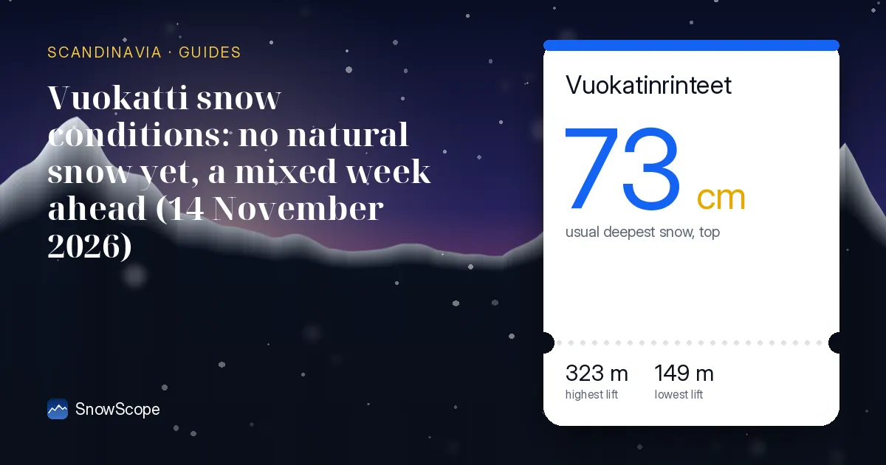

Vuokatti snow conditions: no natural snow yet, a mixed week ahead (14 November 2026)
Kainuu has not had its winter yet. On the morning of 13 November the weather station at Sotkamo Kuolaniemi, 4 km from the Vuokatti slopes at 160 m, measured 0 cm. Sotkamo Tuhkakylä, higher at 212 m, also 0 cm. Kajaani Paltaniemi and Ristijärvi had 1 cm. Our 46-winter record gives 9 cm as the usual depth here on 14 November, so the hill is behind, though not by much.
See the live snow forecast for Vuokatinrinteet in the SnowScope appSnow depth, powder alerts and the 3D map, free.

Bare ground for now
The Sotkamo stations have shown 0 cm every morning this month. A little snow fell on the night before 13 November at Kajaani and Ristijärvi, but not enough to cover the ground. Our estimate of new snow in the last seven days is about 5 cm, most of which melted on arrival.

A mixed week
We expect about 9 cm over the next seven days, including about 6 cm in the first day. The other forecasts we compare with range from 10 to 33 cm at the top of the hill. But this time rain is part of the picture: about 38 % of the water at the base and 20 % at the top may fall as rain. Expect wet snow that settles quickly rather than a deep powder layer.
What is normal
Our record gives a usual depth of 13 cm on 21 November, 17 cm on 30 November and 28 cm on 15 December. A middle winter peaks at about 73 cm and stays white for about 187 days. The trend is slightly down: 196 snow days a winter in the first 15 winters, 181 in the last 15.
When the slopes open
Vuokatinrinteet's own page gives 4 December 2026 as the target opening, if weather and snow allow. Before that, the first cross-country skiing in Vuokatti happens on prepared snow; a first-snow loop opened on 10 October this year.
Tips for skiers
- For skiing in November, look for the prepared-snow trails rather than natural snow in the forest.
- Wet snow and rain on frozen ground makes paths and car parks icy in the morning.
- Follow the resort's own slope page for the actual opening; the date is a target.
More maps (external sites)
References and credits
- Finnish Meteorological Institute, open data (CC BY 4.0) en.ilmatieteenlaitos.fi/open-data
- Vuokatinrinteet, official site: opening dates and lift status, read 2026-11-13 vuokatti.fi/vuokatinrinteet/
About these numbers
Measured snow: morning readings of 13 November 2026 at the official weather stations of Sweden (SMHI open data), Finland (FMI open data, CC BY 4.0) and Norway (MET Norway station reports, CC BY 4.0, as published by Ogimet). Norway's national snow map seNorge (NVE and MET Norway, NLOD) gives the estimates on a 1 km grid for the slopes. Our numbers: SnowScope's forecast for the next seven days at three heights of the ski area, compared with independent forecasts (ECMWF, ICON, GFS, GEM) for 14 to 20 November; snow history of 46 past winters (1980-81 to 2025-26), a model of the past corrected for height. Opening dates: the resorts' own pages, read on 13 November 2026. Run length and lift count: OpenSkiMap mapping.
Official avalanche bulletins: EAWS – European Avalanche Warning Services
Cite this report
For research, teaching or the press: the numbers and charts are free to reuse under CC BY 4.0 with this citation.
SnowScope (2026), Vuokatti snow conditions: no natural snow yet, a mixed week ahead (14 November 2026), https://snowscope.app/blog/en/2026/11/vuokatti-snow-conditions-14-november-2026.html, accessed 2026-11-14
SnowScope (Atlas Labs). (2026, November 14). Vuokatti snow conditions: no natural snow yet, a mixed week ahead (14 November 2026). SnowScope snow reports. https://snowscope.app/blog/en/2026/11/vuokatti-snow-conditions-14-november-2026.html
BibTeX
@misc{snowscope2026vuokattisnowconditions14,
author = {{SnowScope (Atlas Labs)}},
title = {Vuokatti snow conditions: no natural snow yet, a mixed week ahead (14 November 2026)},
year = {2026},
month = nov,
howpublished = {\url{https://snowscope.app/blog/en/2026/11/vuokatti-snow-conditions-14-november-2026.html}},
note = {Published 2026-11-14 20:29 UTC; accessed 2026-11-14}
}· CC BY 4.0 · Methods, data and tools →
Vuokatinrinteet: snow and temperature by height, this winter vs last (tools) →
Follow Vuokatinrinteet
Free: a message when fresh snow is coming, and the forecast every morning.
More snow reports

Hakuba Happo-one gets about 1.7 m of new snow at the top lift from 19 to 25 November, but rain at the base until 20 November. Day-by-day forecast at three heights.

On 13 November 2026 the weather stations in Stockholm and Helsinki measured 0 cm of snow while Sälen had 45 cm and Umeå 20 cm. Height, the sea, the city and the track of the storms explain it, with numbers from 46 past winters.

Ski the 131 km of runs in the Forêt Blanche this December with a six-day pass for 298 EUR.